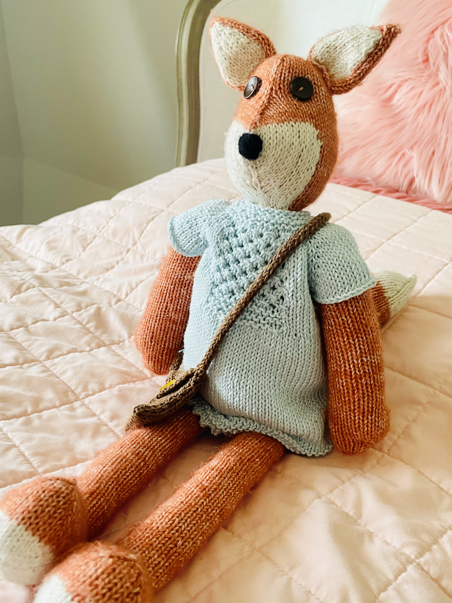

Sketches
Observational and personal sketches that capture ideas, studies, and quiet moments.
Personal art archive
Lydia Art is a personal website that gathers artwork from different periods of my life. This space is meant to hold the pieces I have made, preserve them with care, and share them with family over time.
A small selection from the homepage. These pieces introduce the tone of the collection.
Observational and personal sketches that capture ideas, studies, and quiet moments.

A reflective piece centered on stillness, presence, and inward attention.

A work shaped by movement, labor, and the quiet strength of daily life.

A piece focused on color, atmosphere, and the emotional rhythm of the composition.
This section can hold more drawings, handmade pieces, or future projects as the site grows.

Replace with your image and caption.

Replace with your image and caption.
Lydia Art is not only a portfolio. It is also a personal home for artwork made across the years. Some pieces are finished works, and some are simply meaningful traces of a moment, a season, or a way of seeing.
The purpose of this site is to organize and preserve these works so they can remain visible, remembered, and shared with family in the future.